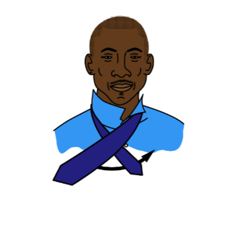
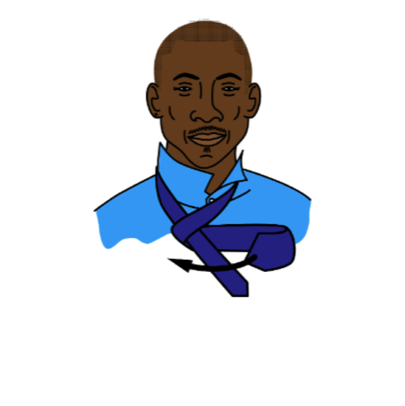
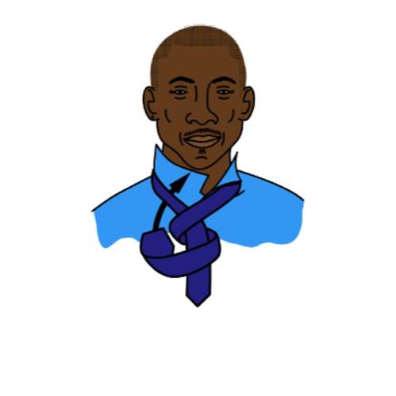
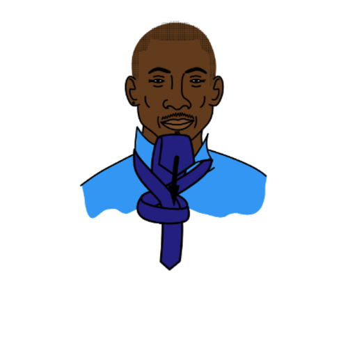
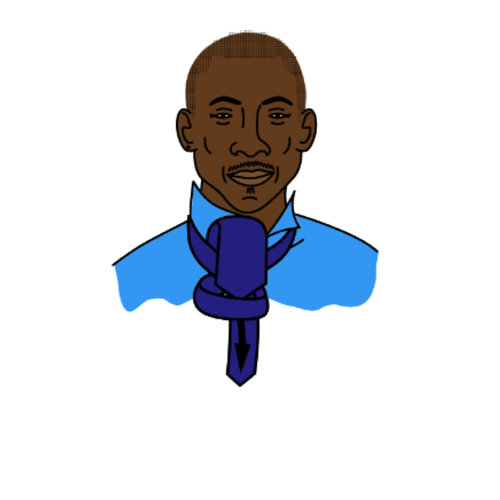
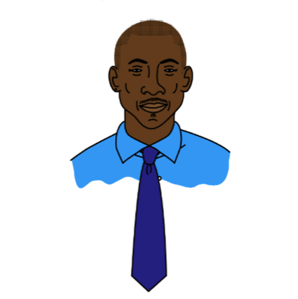

Step 1

Begin with the wide end of your tie on your right and extend it about 10 inches below the narrow end. Cross the wide end over the narrow end.
Step 2
Now cross the wide end under the narrow end from right to left.
Step 3
Cross the wide end over the narrow end one more time.
Step 4
Pull the wide end under and through the loop between the tie and the collar of your shirt.
Step 5
Hold the knot steady and slip the wide end down through the knot.
Step 6
Pull the tie all the way through. Center the dimple. Tighten.
Final Look
Congrats, you're done!